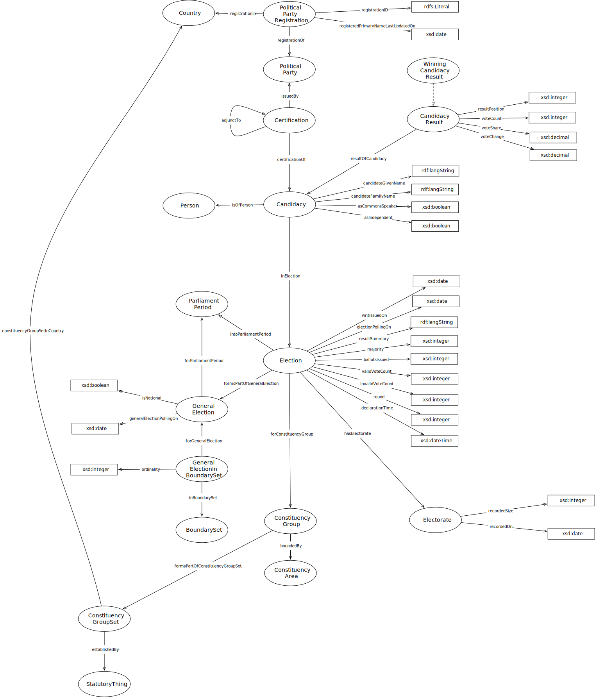

IRI: http://parliament.uk/ontologies/election/Candidacy
IRI: http://parliament.uk/ontologies/election/CandidacyResult
IRI: http://parliament.uk/ontologies/election/Certification
IRI: http://parliament.uk/ontologies/election/ConstituencyArea
IRI: http://parliament.uk/ontologies/election/ConstituencyGroup
IRI: http://parliament.uk/ontologies/election/Election
IRI: http://parliament.uk/ontologies/election/Electorate
IRI: http://parliament.uk/ontologies/election/GeneralElection
IRI: http://parliament.uk/ontologies/election/ParliamentPeriod
IRI: http://parliament.uk/ontologies/election/Person
IRI: http://parliament.uk/ontologies/election/PoliticalParty
IRI: http://parliament.uk/ontologies/election/Population
IRI: http://parliament.uk/ontologies/election/PopulationSize
IRI: http://parliament.uk/ontologies/election/WinningCandidacyResult
IRI: http://parliament.uk/ontologies/election/adjunctTo
IRI: http://parliament.uk/ontologies/election/boundedBy
IRI: http://parliament.uk/ontologies/election/eligibleToVoteIn
IRI: http://parliament.uk/ontologies/election/hasCandidacyResult
IRI: http://parliament.uk/ontologies/election/hasCandidate
IRI: http://parliament.uk/ontologies/election/hasCertification
IRI: http://parliament.uk/ontologies/election/hasElectorate
IRI: http://parliament.uk/ontologies/election/hasPoliticalParty
IRI: http://parliament.uk/ontologies/election/inElection
IRI: http://parliament.uk/ontologies/election/intoParliamentPeriod
IRI: http://parliament.uk/ontologies/election/isPartOfGeneralElection
IRI: http://parliament.uk/ontologies/election/issuedBy
IRI: http://parliament.uk/ontologies/election/ofPopulation
IRI: http://parliament.uk/ontologies/election/ballotsSpoiled
IRI: http://parliament.uk/ontologies/election/candidateName
IRI: http://parliament.uk/ontologies/election/declarationTime
IRI: http://parliament.uk/ontologies/election/partyGained
IRI: http://parliament.uk/ontologies/election/recordedDate
IRI: http://parliament.uk/ontologies/election/recordedSize
IRI: http://parliament.uk/ontologies/election/resultPosition
IRI: http://parliament.uk/ontologies/election/round
IRI: http://parliament.uk/ontologies/election/totalVotesCast
IRI: http://parliament.uk/ontologies/election/voteCount
IRI: http://parliament.uk/ontologies/election/voteShare
This HTML document was obtained by processing the OWL ontology source code through LODE, Live OWL Documentation Environment, developed by Silvio Peroni.